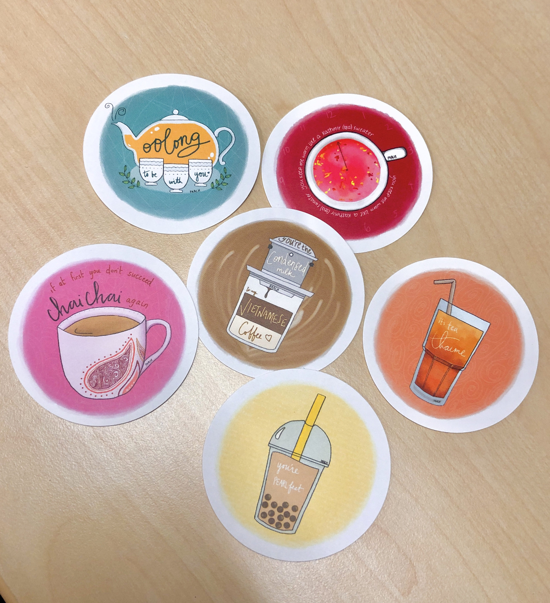

Social Media Marketing
Event Planning
Merch Design
Promotional Design
My freshman year of college, I worked at the Pan-Asian American Community House on campus as a marketing and graphic design intern. My responsibilities included designing marketing materials, handling the media accounts, planning events, and fostering an inclusive space on campus for Penn students.
The Pan-Asian American Community House (PAACH) is a cultural resource center at Penn where South Asian, East Asian, Southeast Asian, and Pacific Islander cultures are celebrated. We develop and implement programs for leadership development and community service in close collaboration with Asian American student and community groups. We also work to foster discussion and awareness about multicultural experiences, societal issues, and what it means to be Asian-American.
The students who do visit PAACH come often and made great use of the space as a club meeting location, between-class nap space, study spot, or just for our free printer access. However, one of the problems we faced was that despite this, many students at Penn weren't aware of PAACH at all, or if they had heard of it, they weren't sure what PAACH does and where exactly the center is. Moreover, our location in the basement of a building that students typically wouldn't frequent often added to the barrier between students and entering the space.
I proposed the idea of designing and distributing PAACH stickers featuring caffeinated drinks originating from different regions in Asia. Undergrads love free stickers, so this was the perfect opportunity to give out free merch and entice students to get to know PAACH while creating conversation topics about culture. I used my iPad Mini and the app SketchBook to illustrate the designs.
Throughout the semester, I worked with the 3 other interns to organize and host group discussions, study-breaks, career lunches, and promotional events. Below are some of the graphics/flyers I made to promote these events.
I took charge of the PAACH Instagram account, the key social media platform the center uses.
Starting out, I noticed that though our account had decent following, at around 600, the engagement level was quite low, averaging about 30 likes and none or one comment per post.
Moreover, the content consisted mostly of promotional flyers and event announcements;
the graphic styles were very different, creating an impersonal, distant feeling throughout the feed.
To better utilize Instagram as a platform for spreading awareness about PAACH programs, values, and people,
I set out to create and post more meaningful, cohesive content on the PAACH feed.
I centered the feed posts around members of the community and moved event promotion posts largely to Instagram stories.
By highlighting the stories of Asian-American leaders at Penn, using the Instagram story space to bring more casual conversations, and unifying PAACH visual content, we saw average likes and comments triple in number and a 50% increase in followers.